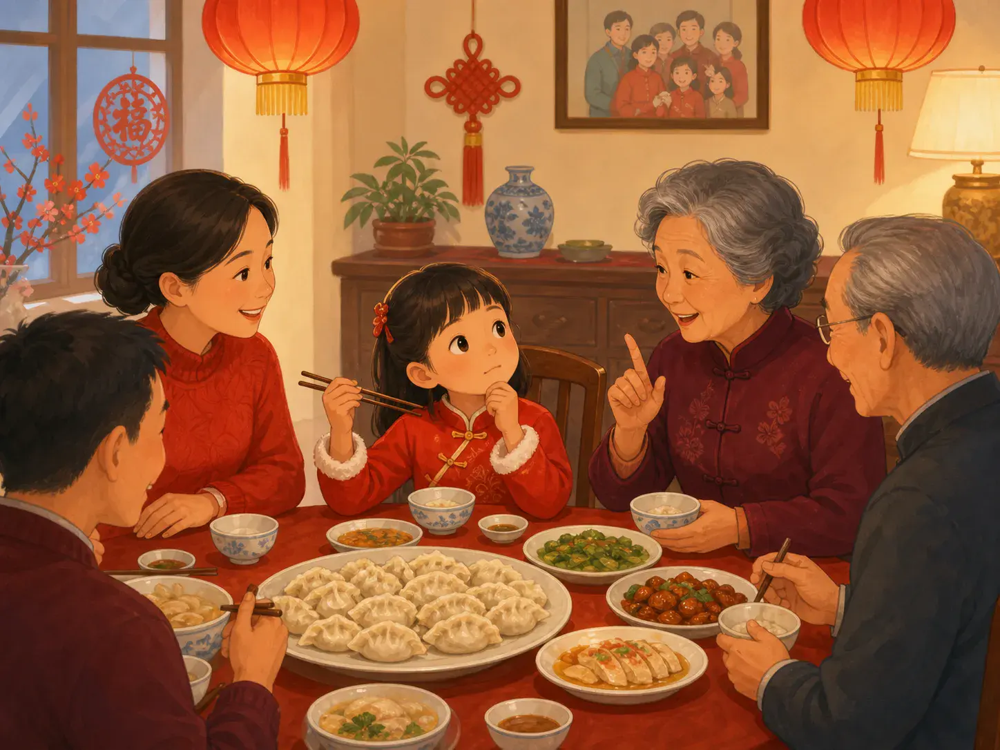
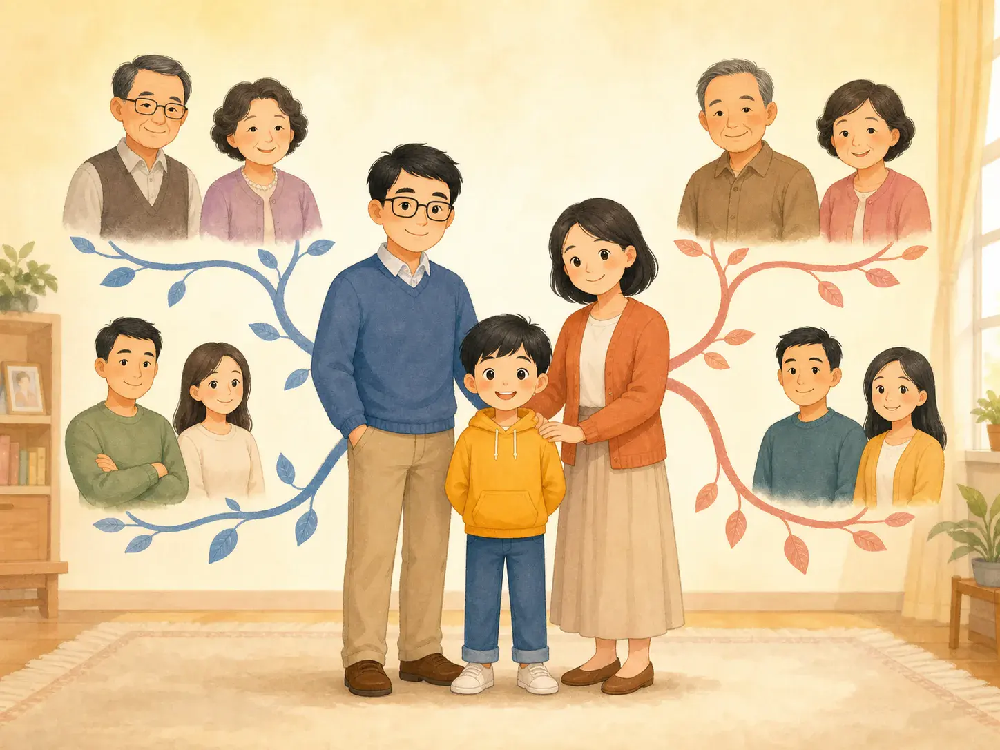

舅舅还是叔叔？中国人的亲戚地图
Which Uncle? A Chinese Family Map
Page 1
家庭聚餐里最让人紧张的一句话
The Most Dangerous Question at a Family Dinner

One family title can make a child quickly count through the family tree in his head.
一大家人吃饭时，一个孩子正准备夹饺子，妈妈忽然小声问：“你还记得该怎么叫他吗？”kuàizi · 成对使用、用来夹取食物的细长餐具。停在半空中。
孩子看看桌子对面的亲戚。知道啊，不就是 uncle 吗？可中文里的“叔叔”可没有这么简单。这是爸爸的哥哥，还是爸爸的弟弟？是妈妈的兄弟吗？刚才还只是一个“uncle”，一下子变成了一道家庭树小谜题。
很多中国孩子都遇到过这种场面。过年聚会，屋子里全是亲戚，大人总会招手说：“快来叫人！还记得这是谁吗？”有时候记得。有时候，脑子要赶紧画一遍家庭地图。
At a big family dinner, a child is reaching for a dumpling when Mom quietly asks, “Do you remember what to call him?” The kuàizi · 筷子 · A pair of slender eating utensils used together to lift food. stop halfway to the plate.
The child looks across the table. He knows this man is an uncle. Easy. Except in Chinese, “uncle” is not enough. Is he Dad’s older brother? Dad’s younger brother? Mom’s brother? Suddenly, one uncle has turned into a small family-tree puzzle.
Many Chinese children know this feeling. At a big New Year gathering, there may be relatives everywhere, and someone is always saying, “Come say hello! Do you remember who this is?” Sometimes you do. Sometimes your brain needs a moment.
Page 2
三个 uncle，三个不同的名字
Three Uncles Walk into a Family Tree

Titles like father's older brother, father's younger brother, and mother's brother quietly show how a relative is connected to you.
英文里，爸爸的兄弟和妈妈的兄弟，都可以叫 uncle。中文却常常会多告诉你一点。爸爸的哥哥通常叫伯伯，爸爸的弟弟通常叫叔叔，妈妈的兄弟则叫舅舅。
所以，一个人只要说“我舅舅来了”，你马上就知道：哦，这是妈妈那边的亲戚。姑姑和阿姨也不一样。爸爸的姐妹可以叫姑姑，妈妈的姐妹则常常叫阿姨或姨妈。
这些称呼就像亲戚身上带着一个小地址：从爸爸这边来，还是妈妈这边来？有时候连年纪比爸爸大还是小，也一起告诉你了。难怪中国人的亲戚关系更像一张地图。
In English, Dad’s brother and Mom’s brother can both simply be “uncle.” Chinese often gives you more clues. Dad’s older brother is usually bóbo. Dad’s younger brother is shūshu. Mom’s brother is jiùjiu.
So if someone tells you, “My jiùjiu is coming,” you already know something about him. You do not need to ask, “Which side of the family?” The word has given away the answer. Aunts work in a similar way. Dad’s sister can be gūgu, while Mom’s sister may be āyí or yímā.
It is almost as if every relative is carrying a tiny address. Dad’s side? Turn this way. Mom’s side? Turn that way. Older or younger? Another clue. No wonder a Chinese family tree can feel less like a list of names and more like a map.
Page 3
然后，表哥堂姐们来了
And Then There Are the Cousins
刚觉得自己弄懂了，大人又问：“那 cousin 呢？”英文里的 cousin 可省事了。男孩女孩，哥哥姐姐，爸爸这边妈妈那边，都可以是 cousin。
中文还可以继续分。有些是堂哥、堂姐、堂弟、堂妹，有些是表哥、表姐、表弟、表妹。称呼里不但可能藏着从哪一边连过来的，还可能告诉你对方比你大还是比你小。
学到这里，一个刚开始学中文的小朋友大概很想钻到饭桌底下。不过别担心，中国孩子通常也不是坐在那里，把一大张“亲戚称呼表”从头背到尾。
Just when you think you have solved the puzzle, someone says, “What about cousins?” English gives us one wonderfully useful word: cousin. Boy? Girl? Older? Younger? Dad’s side? Mom’s side? Still cousin.
Chinese can be much more specific. Different words can tell whether a cousin comes through certain branches of Dad’s family or through other branches, and whether that cousin is older or younger than you. At this point, a beginner may reasonably want to hide under the dinner table.
Luckily, Chinese children do not usually learn every family title from a giant chart. They learn them one person at a time.
Page 4
这些名字，是一顿一顿饭学会的
Nobody Hands You a Family Vocabulary Test
妈妈说：“把这个拿给舅舅。”慢慢地，你就知道谁是舅舅。下次见面，爸爸说：“快叫姑姑。”又多认识一个。过年的时候叫错了，奶奶马上提醒一句。再叫几次，那个称呼就记住了。
而且，中国这么大，不同地方、不同家庭的叫法也会有些不同。所以真正的孩子，都是跟着自己身边的家人一点一点学会的。
这么想，故事开头那个拿着筷子的孩子也不用太紧张。筷子可以放下来了，饺子也终于可以夹了。万一真的叫错呢？放心。
饭桌上的大人一定会立刻告诉你。而且很可能不止一个。中国人的亲戚地图，就是这样一顿饭、一顿饭，慢慢画出来的。
A child hears Mom say, “Go give this to your jiùjiu,” and slowly learns who jiùjiu is. During another visit, Dad says, “Say hello to gūgu.” At New Year, Grandma corrects somebody who has mixed up two relatives. Little by little, the family map fills itself in.
And family words can vary by region and by family. Not everyone uses exactly the same title in exactly the same way. That is another reason real children learn these words from the people around them, not from memorizing one enormous chart.
So perhaps the child at our dinner table does not need to panic after all. The chopsticks can come back down. The dumpling can be rescued. And if the wrong family title comes out?
There is a very good chance that one of the adults at the table will correct it immediately. Probably several adults. That is how the map gets learned. One family meal at a time.